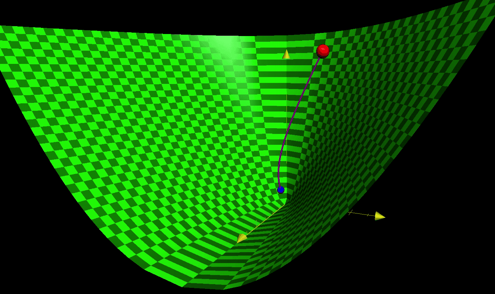

Dynamic Programming (DP) and Value Iteration (VI)
Originated by Bellman in 1959 as a fundamental DP algorithm, VI has been widely adopted to find optimal policies for different types of systems.
However, despite its popularity in the science community, VI is flawed as it is only applicable for discrete-time models.

Value iteration in continuous-time
In this research work, we have made a breakthrough on this long-standing issue, by developing a complete framework of continuous-time VI with rigorous convergence analysis.
Starting from an initial value function \(V_0\), the \(V_t\) converges to the optimal value function \(V^*\).
Reinforcement Learning (RL) and Adaptive (DP)
The idea of RL, first introduced by Minsky in 1954, is to provide an understanding of activities such as the learning, memorizing, and thinking processes in human brain, and ultimately construct a system that can duplicate these “sentient”.
In this research work, we developed a new RL technique, under the name of adaptive DP, for continuous learning environments. Fundamentally different from existing results, our adaptive DP method is driven by continuous-time DP algorithms, such as the continuous-time VI.
Three
Four
Robust DP and Robust ADP